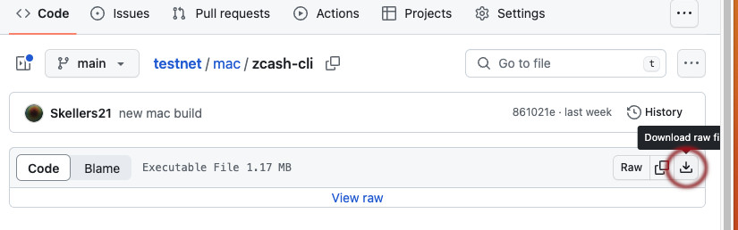
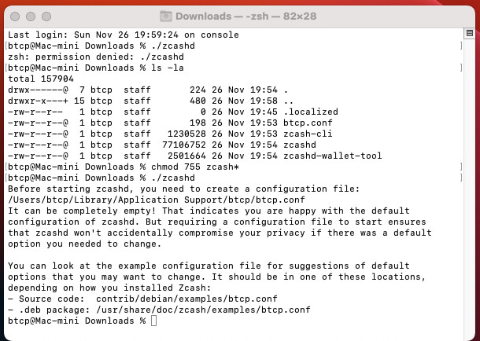
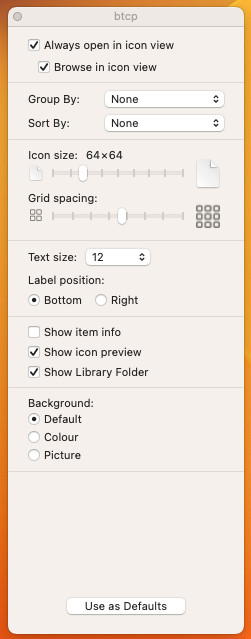
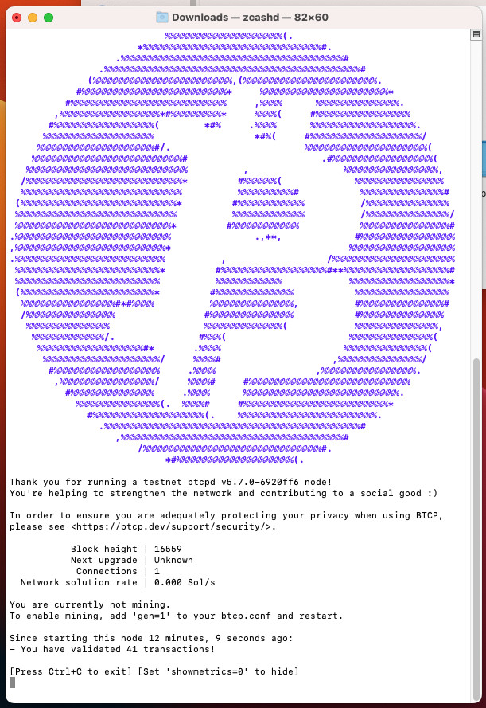

1. Download the 4 files from the mac folder in GitHub by clicking on the files individually and select download raw file

2. Open up a Terminal window and change to the Downloads folder and type in
zcashd<RETURN>
You should see the following information

We now need to browse to the suggested folder and copy across the btcp.conf file which you just downloaded
3. Open Finder and go to your home folder then View>Show View Options and check the Show Library Folder option

You should now be able to browse to the suggested folder and copy in the btcp.conf file
4. Run zcashd again and the node should start up and proceed to download blocks
